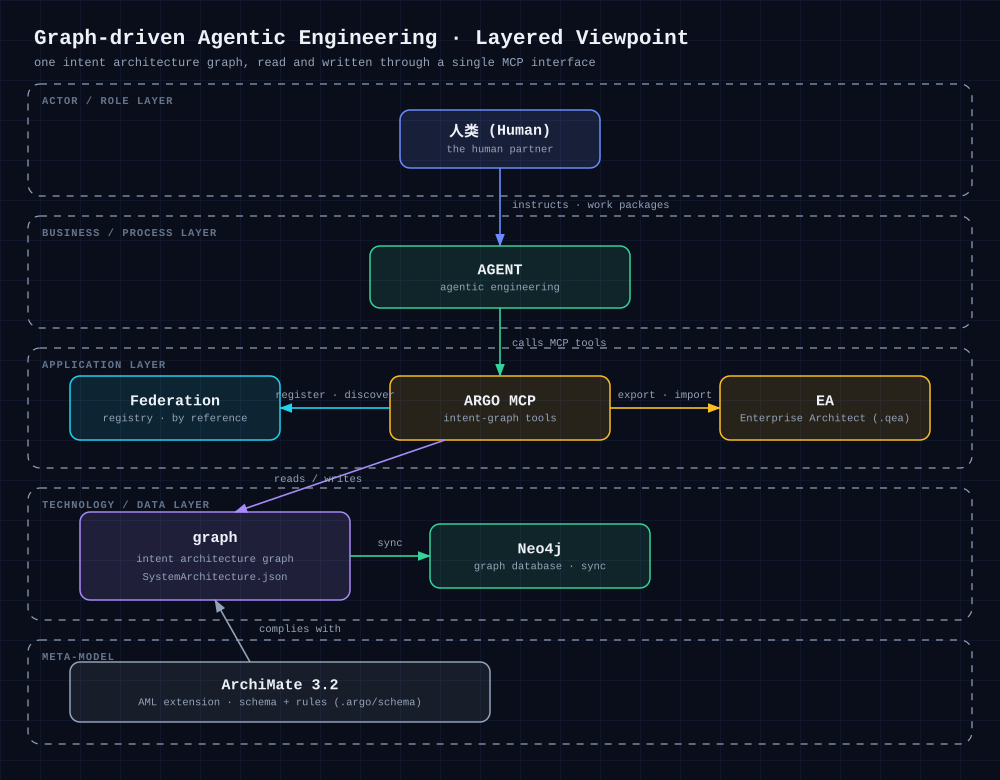

能力总览 · Capabilities
框架给了你什么
ArchGraph 已经长成一个面向 coding agent 的长期记忆系统：一张你既能推理、又能信任的架构图， 部署在你已经在用的宿主里。下面按能力分组，逐条说明。
与其他做法相比，ArchGraph 补上了什么
给 coding agent 提供上下文，常见有四种做法。它们各有真实的优点，也各有真实的短板 —— 下面如实列出， 以及当上下文变成「一张经校验的类型化图谱、走单一 MCP 接口」时，哪些问题被解决。
| 做法 | 今天能给你什么 | 短板 | ArchGraph 补上的 |
|---|---|---|---|
| 上下文散落在文件里 | 零配置，文本就在手边。 | agent 每次会话冷启动重读；「为什么」会漂移、被复制。 | 一张类型化图谱经 MCP 读写 —— 会话恢复上下文，默认复用而不是复制。 |
| 通用 RAG / 向量库 | 对文本做便宜的语义召回。 | 扁平片段：没有关系、没有类型、没有语义 / 类型化去重、没有单一事实来源。 | 语义召回建在类型化图谱之上，命中自带结构与出处。 |
| 纯 Wiki / ADR 目录 | 人读友好、容易评审。 | 机器不可消费、不做校验、会悄悄过期。 | agent 与团队共用同一事实来源，每次写入都按本体包校验。 |
| 通用图 / 本体工具 Protégé / OWL、Neo4j、TerminusDB、Archi / EA |
建模与查询能力强，也允许你扩展模型、换用自定语汇。 | 「模型」和「agent 的读写路径」是两回事：没有一个单一受校验接口，把类型化去重与提交可追溯一并交给 agent。 | 本体是一个一等公民、受校验、运行时解析的 schema bundle，并且同一套 MCP 接口既读又写这张图，内建类型化去重与可追溯。 |
| ArchGraph 自身的成本 | 一套接口，覆盖类型化、受校验、运行时解析的建模与记忆。 | 需要你自己部署与运维，不是托管服务。 | 上下文读写、去重、EA 互操作只需 Node.js；语义召回另需 Neo4j + 一个 embedding 端点；部署走 argo-deploy + ~/.argo/.env，部署后需重启宿主。 |
argo init 的结构同步与语义生命周期步骤会报告 failed，
但图谱本身（上下文读写、去重、EA 互操作）依然可用。
本体与建模
默认 ArchiMate 3.2，但建模语言是可插拔的 —— 你可以换成自己的业务本体。
可自定义本体（本体包 / schema bundle）
在项目里放一份 .argo/schema/，就用你自己的元素/关系类型和端点矩阵来校验、检索这个项目，只影响它，不动全局默认。全新安装内置 ArchiMate 3.2；工作区可以解析到它自己的本体包。看使用案例 →
把 agent 也建进模型
用「业务执行者 / 角色」表示 agent，并给它们各自的记忆子视图、指派关系和工作包 —— 宿主设计与产品设计落在同一个模型里。
Agent 长期记忆
一张意图图谱，通过单一 MCP 接口读写；记忆分层，会话开始只加载很小的一块。
长期记忆 for agents
单一意图图谱，读写在同一个 MCP 接口上。记忆分三层：会话开始加载紧凑的 T1 工作记忆，T2 长期记忆按需召回，T3 归档只在显式检索时读取 —— agent 无需一次性载入全部上下文。

检索
两种找法：语义（Graph RAG）与结构（Cypher），外加可换的 embedding 和召回优先的调优。
语义 + 结构检索
既能在向量索引上做语义（Graph RAG）召回（可用 scope 收窄范围），也能用只读 Cypher 做结构查询和聚焦的上下文读取。召回宽松、尽量不漏；审计读取则严格。
自带 embedding
语义检索可指向任意 OpenAI 兼容的 embedding 端点：沿用云端 profile，或设 ARGO_EMBEDDING_PROFILE=openai-compatible 换自建模型，实现离线 / 内网 / 私有部署，无厂商锁定。
读取只返回你需要的
结构读取默认省略记账信息（commit / 测试用例台账），语义命中的结果带一个 matchedSnippet，说明「为什么它匹配」—— 让上下文只花在有收益的地方。
召回优先的检索调优
可选的第二级加上「向量 + 词法」混合融合与一个 LLM 重排器（带 fail-open 保护）。调优只会扩大候选池，召回只升不降。

matchedSnippet，上下文只花在有收益的地方。图谱质量
干净是设计出来的，不是靠自觉；每一次改动都可证明、可追溯。
写入即去重
新增元素、关系或视图时，若已有匹配就复用而不是复制；新元素若在语义上接近某个同类元素，会被拦下并作为候选返回。干净图谱才让语义召回保持准确。
每次改动可证明
验收测试先行、是可执行的 GIVEN-WHEN-THEN；改动提交后，commit id 会登记回对应元素 —— 图谱自带历史与证据。
结构受校验
每次写入都会按本体包和图层语义规则检查（标识、交叉引用、关系端点、视图容量），同一个视图内不会重复纳入同一成员。

多宿主部署
一次部署，覆盖你已经在用的 coding agent 宿主。
在任何宿主里跑
一条 argo-deploy 就把 MCP 服务端、skills、rules 和 agents 注册进 GitHub Copilot、Cursor、OpenCode、DeepSeek Harness、OpenClaw、Codex —— 每个都有会话唤醒门禁。注意：skills / rules 装到每个宿主，agents 只装到支持它的宿主。
联邦共享
每个项目保留自己主权的图谱；中心只是登记 + 代理，不是内容仓库。
联邦式图谱共享
把可复用的架构子图发布到联邦登记中心，再按引用读取另一个项目开放的内容 —— 注册、发现、授权、读取。默认拒绝，不复制也不合并。
联邦，而非分布式
每个项目保留一张完整、主权的 canonical 图，自己就是唯一事实来源；中心只是一本登记 + 代理（register · discover · authorize · read by reference），只存联邦元数据，永不存内容。
查询另一个项目的图
每个读取工具都可带一个可选 projectId：省略就读本仓，传入就通过联邦中心读一个已授权外部项目的图 —— 只读、按引用，默认拒绝。

互操作
与人使用的企业建模工具打通。
Enterprise Architect 互操作
图谱在写入时和 argo init 时会投影成标准 .qea 模型；人类在 EA 里的改动会变成一个语义 diff，由 agent 分析后再决定是否写回。
可观测与成本
让「agent 到底花了多少」变成可见。
看见 agent 花掉的
构建期的日志把每次工具调用及其 token 成本记到每个工作区一个文件；agent-search-diagnosis 技能（OpenCode）能把一次会话变成自包含的诊断包 —— 过度搜索、浪费的轮次、图↔仓往返都变得可见。